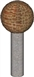
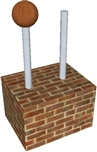

Der Biber hat sich eine Datenstruktur zur Beschreibung von Skulpturen ausgedacht:
Eine Skulptur wird durch ein Tripel (K, M, Liste) beschrieben,
mit einem Körper K aus einem Material M und einer Liste kleinerer Skulpturen,
die oben auf dem
Körper K angebracht sind.
[ ] beschreibt eine leere Liste ohne Inhalt,
[a] eine Liste, die nur eine kleinere Skulptur a enthält.
[a, b] beschreibt eine Liste mit zwei kleineren Skulpturen a und b.
Beispiele:
| (Zylinder, Glas, []) | |
|  | (Zylinder, Beton, [(Kugel, Ziegelsteine, [])]) |
Und welcher Ausdruck beschreibt diese Skulptur?